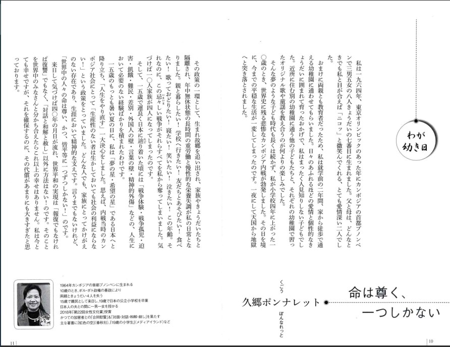
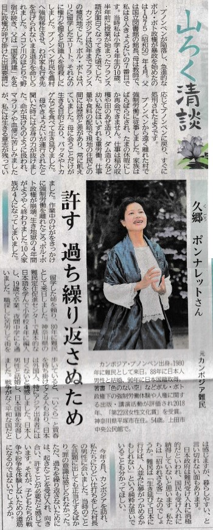
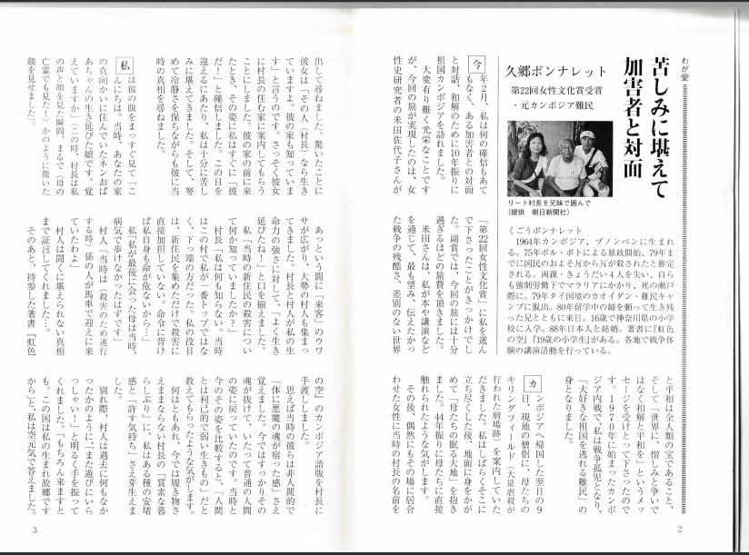
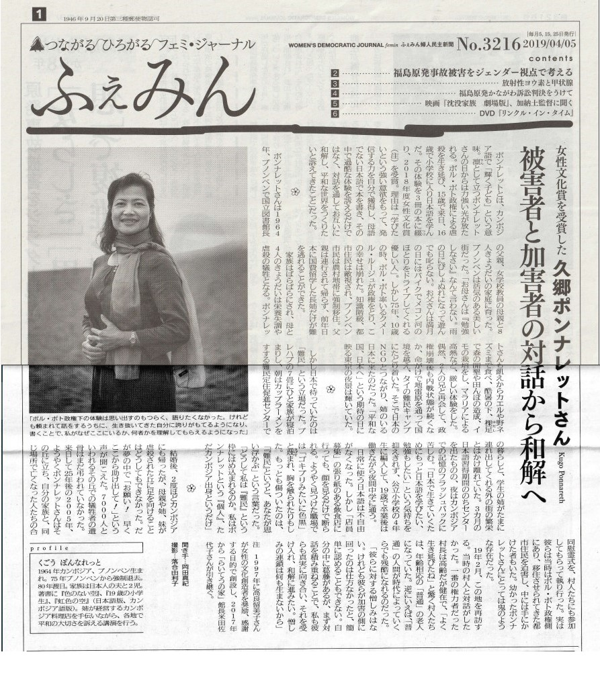
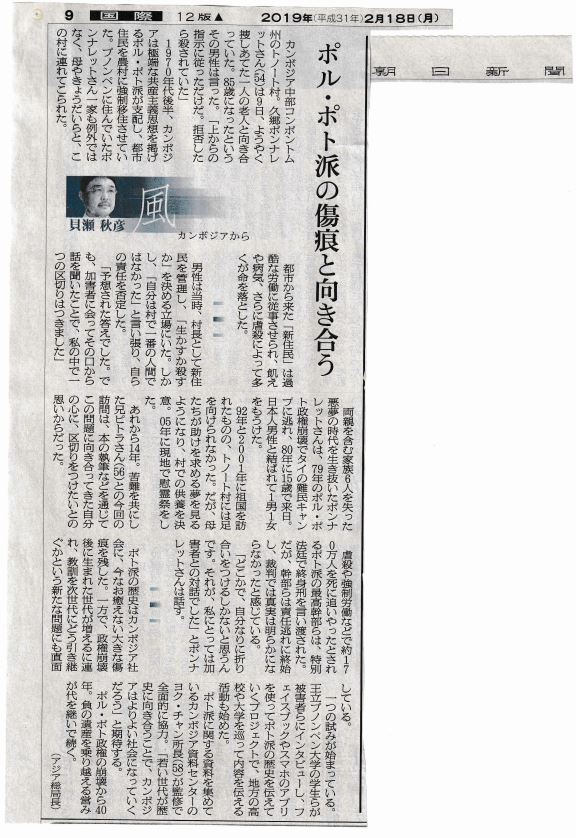
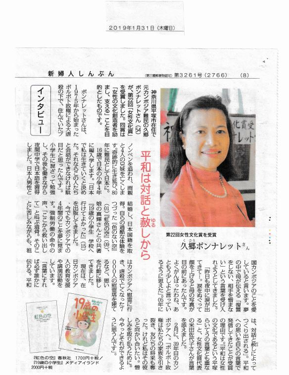
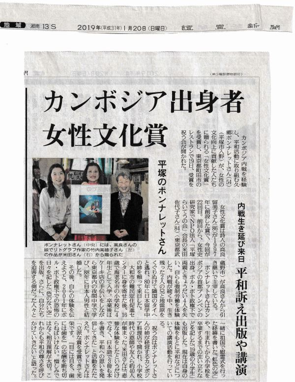
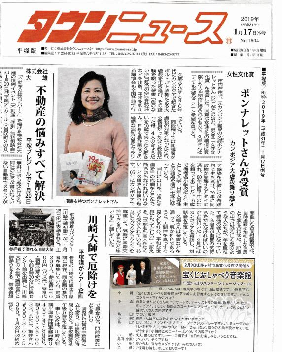
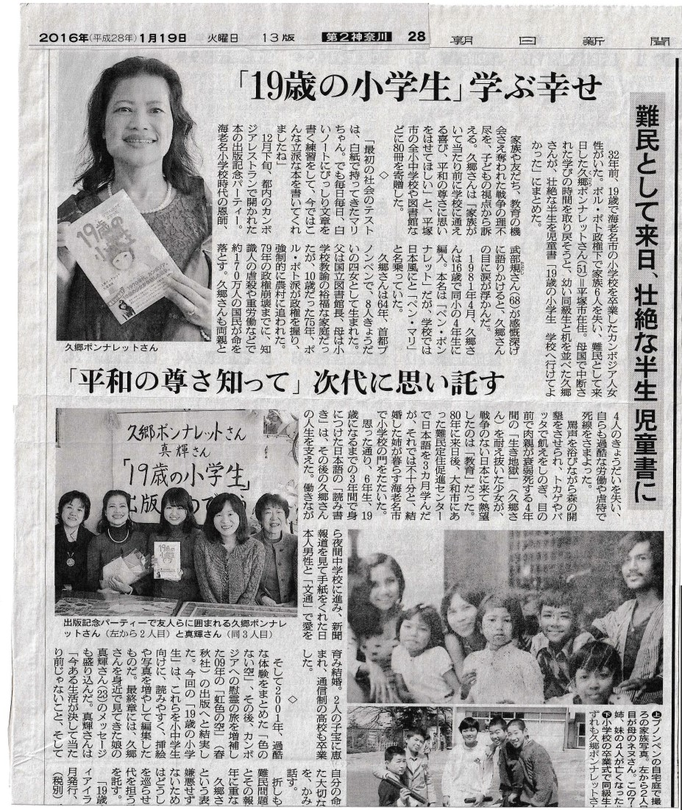

命は尊く、一つしかない
↓全文は以下。クリックすると大きく表示されます

信濃毎日新聞 （掲載年月日：2019年7月30日）
山ろく清談
許す 過ちを繰り返さぬため
↓全文は以下。クリックすると大きく表示されます

婦人通信 （掲載年月：2019年6月）
苦しみに堪えて加害者と対面
ソート村長を兄妹で囲んで
↓全文は以下。クリックすると大きく表示されます

ふぇみん （掲載年月日：2019年4月5日）
被害者と加害者の対話から和解へ
↓全文は以下。クリックすると大きく表示されます

朝日新聞 （掲載年月日：2019年2月18日）
ポル・ポト派の傷跡と向き合う
↓全文は以下。クリックすると大きく表示されます

新婦人しんぶん （掲載年月日：2019年1月31日）
インタビュー
平和は対話と赦しから
↓全文は以下。クリックすると大きく表示されます

讀賣新聞 （掲載年月日：2019年1月20日）
カンボジア出身者 女性文化省
内戦生き延び来日 平和訴え出版や講演
↓全文は以下。クリックすると大きく表示されます

タウンニュース （掲載年月日：2019年1月17日）
女性文化賞 受賞について
カンボジア大虐殺乗り越え
↓全文は以下。クリックすると大きく表示されます

朝日新聞 （掲載年月日：2018年8月7日）
リレーオピニオン -旅のチカラ-
家族慰霊のため 故郷の村へ
↓全文は以下。クリックすると大きく表示されます

朝日新聞 （掲載年月日：2016年1月19日）
「19歳の小学生」学ぶ幸せ
難民として来日、壮絶な半生 児童書に
↓全文は以下。クリックすると大きく表示されます

日経新聞(2009年7月26日)
読書欄 『虹色の空』 久郷 ポンナレット
１９７５年代後半、カンボジアではポル・ポト政権によって２００万人が虐殺されたといわれる。
本書は、圧政下の母国で両親と兄弟４人を失い命からがら脱出した著者の体験記だ。
日本で幸せな家庭を築き、２００５年には、亡くなった家族を慰霊するため母国を再訪した。
わだかまりをぬぐった末の「赦すことは簡単なことではありません。
でも憎むではない方法を私は探したかったのです」と言う言葉が胸を打つ。
（春秋社・１７００円）
共同通信(2009年7月23日)
「時の人」 ◎カンボジア内戦の経験を日本語で執筆、出版した久郷（くごう）ポンナレットさん
１０歳だった１９７５年、生まれ育った首都プノンペンを追われた。ポル・ポト共産主義政権による大虐殺を辛うじて生き延び、インドシナ難民として８０年に来日。波乱の人生を「虹色の空」（春秋社）につづった。
内戦中に父母ときょうだい４人を亡くし、故郷を離れざるを得なかった。「普通の家庭に育った人間がすべてを失い、孤児になった。日本の若い人に、平和は当たり前ではないと伝えたい」。執筆の動機を力説する。
来日後、「学んで一人前になりたい」と１６歳で小学校に編入。働きながら夜間中学に通った。日本人男性と結婚し、神奈川県平塚市で２人の子どもを育てつつ、３５歳で通信制高校に進む。「自分の力で仕事をして生きる。そんな普通の暮らしがしたかった。それには言葉が必要です」。美しい日本語で語る。
就職などで繰り返し外国人差別に遭い、日本社会の「分厚い壁」を感じた。「一人一人のちょっとした振る舞いで、国と国との関係も変わると思う。冷たくされれば誤解が誤解を生む。親切にされれば『やさしさの循環』が始まる」
４年前、母らが行方不明になった村で、慰霊祭を行った。虐殺の加害者が今も住む場所を再訪するのは、ためらわれた。だが「憎しみを取り払うには、憎しみを持たないこと」という仏教の教えに従い、過去を受け入れる覚悟を決めた。
同行した娘が「母が生き延びたから今の自分がある」と感謝を言葉にしてくれた。それが、うれしい。４４歳。
【注】「虹色の空」は１７８５円
原 真（はら・しん）
佼成新聞(2009年7月19日)
他者を思いやる心と地道な行動で創り出す平和
ポル・ポト政権の圧政によって国民の１００万人以上が犠牲になった１９７０年代のカンボジア。久郷ポンナレットさんは、家族６人を亡くし、自らは過酷な労働に耐え、難民として日本に逃れてきた。
現在は「世界平和の種をまく」を信条に講演を行うほか、執筆にも取り組み、このほど自身の半生をつづった『虹色の空』を発刊した。同書には、さまざまな感情を乗り越え、元ポル・ポト派住民と共に行った慰霊活動の様子も紹介されている。自身の体験を踏まえた平和への思いなどを聞いた。
↓全文は以下。クリックすると大きく表示されます

平塚タウンニュース(2009年7月16日)
ポンナレットさん 著書『虹色の空』を寄贈
カンボジアの内戦で、大虐殺を生き抜いた市内在住の久郷ポンナレットさんが自身の体験を綴った著書「虹色の空」(日本語版)を、市内の中学校や公立図書館、特別支援学校、高等学校に寄贈。先月３０日には、大蔵市長や金子教育長らが出席し、贈呈式が行われた。
大蔵市長は「平塚の若い世代が平和の尊さを考えるきっかけになる貴重な著書です」と謝辞を述べた。ポンナレットさんは「家族が支えあって生きることの大切さが、子ども達や先生方に伝われば」と話した。
今後は、「カンボジア語版・英語版・日本語版で出版されているこの『虹色の空』を、より多くの言語で出版して、他の国の方々に読んでもらいたい」と抱負を語った。
↓クリックすると大きく表示されます

読売新聞(2009年7月11日)
カンボジア内戦 苦難つづる
カンボジア内戦を乗り越え、難民として来日した平塚市の久郷ポンナレットさん(44)が、自身の体験をつづった「虹色の空＜カンボジア虐殺＞を超えて」（春秋社）を出版した。内戦で父母と4人の兄弟を失ったが、「加害者に復讐(ふくしゅう)するためではなく、許すために書いた」という。
子供たちにカンボジアの現状を知ってほしいと、平塚市役所に60冊を寄贈した。
ポンナレットさんは1064年、プノンペンで生まれた。8人兄弟の7番目で、車もテレビも冷蔵庫もある、裕福な家庭で育った。
しかし、70年にカンボジア内戦が勃発。武装組織「ポル・ポト派」が政権を握った75年、国立図書館長だった父、小学校教諭だった母、兄弟4人が同派に連行されるなどして亡くなった。
同派による圧政が続く中、80年に、生き残った兄2人と国外へ脱出することを決意。一緒に地雷原をくぐり抜け、タイ領内に移り、親類の助けを借りて、身分証明書や渡航許可書を作成してもらい、難民として来日し、日本に留学していた姉と再会した。
その後、大和市の難民定住促進センターで一時過ごした後、16歳で小学校に入学。卒業後は、レストランの手伝いをしながら夜間中学で学び、88年に日本人男性と結婚。現在は、大学2年の長男と高校2年の長女の母として、平穏な日々を送っている。
しかし、当時の記憶は薄れることはなく、2005年にカンボジアを訪れ、当時の住民らと一緒に、亡くなった人たちを慰める慰霊式を行った。06年も再び現地を訪れ、家族と犠牲者のために慰霊塔を建立した。
ポンナレットさんは01年、ポル・ポト政権下で、強制労働で家族をバラバラにされ、バッタやコオロギなどを食べて骨と皮ばかりになり、地べたに眠って過ごした恐怖を描いた「色のない空」という本を出版。
「虹色の空」は、慰霊式や慰霊塔を建てたいきさつなどを加筆して仕上げた。
ポンナレットさんは「平和への願いを込めて、題名を『虹色の空』にした。多くの人に読んでほしい」と話している。
「虹色の空」は、カンボジア語、英語版が出版されている。日本語版はＢ6判、310ページ(1700円)。
↓クリックすると大きく表示されます

神奈川(2009年7月6日)
平和へ「赦す」道 苦難半生、慰霊の記念出版
カンボジア内戦で家族６人を失い、農村で強制労働をさせられるなど苦難の末に生き抜いてきた平塚市在住の久郷ポンナレットさん(44)が、自身の心の軌跡をつづった著書「虹色の空」(春秋社)を出版した。互いに憎みあい、復讐するのはやめよう」。少女時代からの約30年の歳月を重ねて進んだ道は、「赦す」ことだった。
(牧野 昌智)
↓全文は以下。クリックすると大きく表示されます

Φ talking at the edge(2009年7月6日)
雲の上には、いつも空が。
（河田桟（かわた・さん）氏によるインタビュー記事。） ポンナレットさんは、カンボジア人として子供時代に壮絶な運命の暗転を経験、その渦中を生き延びたサバイバーです。その後、縁あって来日。現在は、二人の子を持つ母として幸せな家庭を築いています。底抜けの明るさで、くったくなく笑う彼女は、しかしまたその奥に、暗黒を通過した人にしか触れ得ない深みを秘めているように見えます。そして時折、まわりの人々をびっくりさせるような行動力で未来を開いていくのです。2009年の春、自らの体験を記した『虹色の空』を出版。今回の対話は、その本を元にお話を伺いました。
続きは こちら
湘南ジャーナル(2009年7月3日)
生きる力、子どもたちに伝えたい 平塚の小中高に著書寄贈 元カンボジア人
平塚在住20年になる元カンボジア難民の久郷(くごう)ポンナレットさん＝写真が、自らの体験を描いた2作目の著書『虹色の空－カンボジア虐殺を超えて １９７５－２００９』を出版し、平塚市内の小中学校、公立図書館、特別支援学校、高等学校に寄贈した。
ポンナレットさんは、少女時代にカンボジアポルポト政権下で国立図書館館長だった父と教員の母、兄弟４人を失い、自らも強制労働に従事。命がけで国境を越えて１９８０年に来日し、88年に日本人男性と結婚して平塚に住んでいる。
２００１年に『色のない空』を執筆し、虐殺を生き延び日本での差別を越えて力強く生きる半生を綴り感動を呼んだ。『虹色の空』は、その後の8年間を加筆したもの。カンボジアの虐殺の地に再び立ち、加害者を交えて合同慰霊を呼びかけた足跡が刻まれ、憎しみを超えて灯せる希望があることを伝えている。
「最初の本を書き終え、これからの私に何ができるかを考えました。当時の記憶は鮮烈で赦すことは簡単ではありませんが悲劇に終わらせずにそこから多くを学んでもらうこと、憎しみではなく別の方法を探すことが、亡くなった人と今を生きている人のためであると」。
同著は平和メッセージにとどまらず、生きる力のヒントも含まれている。
「特に子どもたちには、辛くても必ず近くに見守っている人がいることを知ってほしい」。
ポンナレットさんには大学生と高校生のお子さんがいる。「2人とも平塚生まれ」。本の寄贈は地元への恩返しでもある。贈呈式が６月３０日に平塚市役所で行われ、大蔵市長は「どんな境遇からも立ち上がって平和に生きることを示してくれる本」と謝辞を述べた。
↓クリックすると大きく表示されます

毎日新聞(2009年7月1日)
内戦で両親失い／強制労働／地雷原通り脱出 体験記出版、平塚市に寄贈 「子どもの生きる力にの」
元カンボジア難民で平塚市の主婦、久郷ポンナレットさん(44)=写真=が、内戦で両親らを失い、強制労働などを経験しながら生き抜いた経験を記した著書「虹色の空＜カンボジア虐殺＞を超えて」(春秋社)を出版した。30日に平塚市役所を訪れ、約60冊を寄贈した。ポンナレットさんは「生きていれば味方もできるし、何とかなる。子どもたちの生きる力に役立てて」と話した。
【渡辺明博、写真も】
↓全文は以下。クリックすると大きく表示されます

東京新聞(2009年6月22日)
憎しみを超えて 元ポル・ポト派と虐殺の村で慰霊
つるつるにそられた母の頭を見て、中学１年だった長女（十六）は驚いた。「私もそらないといけないの？」。
否定されても、別の心配が口をついて出た。「学校の三者面談がある来週までに生えてくる？」
二〇〇五年十月、神奈川県平塚市の主婦、久郷ポンナレットさん（四四）は、日本で生まれ育った長女とカンボジアにいた。慰霊の旅だ。故郷では近親者の葬儀で、剃髪する習慣があるが、それでも女性がそるのは珍しい。
訪れたのは、首都プノンペンの北約百三十キロの農村。ポル・ポト政権下の一九七〇年代、この村で過酷な労働を強いられ、母やきょうだいを含む約七千人が虐殺された。
幸せな幼年期は十歳で終わった。七五年のポル・ポト派によるクーデターの数日後、プノンペンの市民数百万人全員が、立ち退きを命じられた。「家族旅行ができる」と喜ぶこどもたちをよそに、両親の表情は暗かった。家財道具車に載せ、家族全員がついて歩いた。
途中、父は連行された。次姉は栄養失調で病死。長兄は将来を悲観して逃げ、行方不明になった。行き着いた農村では、母ら残った家族とも引き離され、監視の下、土木工事や農作業に駆り出された。ろくに食事は与えられず飢えから虫やトカゲを口にした。半年に一回、母と会えることが心の支えだったが、数回会ったあと、母も姉妹もどこかに連れ去られた。
炎天下、マラリアにも苦しみながら、作業で重い土を背負って、空を見上げた。青く澄んでいたはずなのに、「記憶の中の景色はすべて灰色」だった。
五年間のポル・ポト政権後は村を離れたが、その後も内戦で混乱。七五年、再会した親せきを頼り、ゲリラにおびえながら何日間も歩いてタイの難民キャンプに逃げた。日本に留学していた姉のつてで、兄二人と来日。十人家族は四人になっていた。
大和難民定住センター（同県大和市）で三ヵ月半、日本語を学び、十六歳で小学校四年に編入。姉が経営するカンボジアレストランを手伝いながら夜間中学に通った。差別やいじめにも遭い、一時は過食症にもなったが、八八年に会社員の夫と結婚、一男一女をもうけた。二〇〇四年には通信制高校を卒業した。「生きるだけで精いっぱい。あっという間の二五年でした」
必死に生き延びて幸せをつかみ、時間に余裕ができたと感じたころ。生き別れた母と姉妹が「助けて」と叫ぶ夢を何度も見た。言葉にできない苦しさを感じた。「なぜ自分だけ生き残ったのか」。家族の死を受け入れられない思いとともに、ポル・ポト派への憎しみもぬぐい切れなった。
「憎しみは、とてつもないエネルギーを消耗させる。憎むのではない方法を探したかった」
思い詰めた末、両親ら失った家族の葬儀をしようと決めた。二度と足を踏み入れないと誓った村を三〇年ぶりに訪れた。村へ続く門をくぐると、無数の死者が出迎えているように見えた。隣の長女が手をさすってくれた。
たまたま掘り出された大腿骨を肉親として火葬した。犠牲になったすべての人へ祈りを込めた。
重労働を強いた元ポル・ポト派の村民約二百五十人も慰霊の儀式に加わった。頭をそってくれたのも、加害者の立場だった年老いた女性。指先のぬくもりが頭から伝わってきた。「この人たちも同じ人間なんだとはじめて実感できた」
見上げるとかつて色のなかった空は、高く澄んでいた。今年、平和への願いを込めて半生を書いた本を出版した。題名は『虹色の空』（春秋社）にした。
くごう・ぽんなれっと 宗教や教育を危険視する極端な原始主義に基づいて、２００万～３００万人の都市住民が虐殺されたとされるカンボジアのポル・ポト派時代（７５～７９年）に、国立図書館館長の父と、小学校教師の母、きょうだい４人を失った。来日後は内戦時代の当事者として、平和を訴える講演を各地で行ってる。
↓クリックすると大きく表示されます

平塚タウン誌(2009年6月11日)
■「生きること、家族の絆」伝えたい 久郷さんが「虹色の空」（春秋社）を出版
1970年代にカンボジアで起きた、ポル・ポト政権による大虐殺を生き延びた久郷ポンナレットさん(入野在住)がこの程、自身の体験を元に著した「虹色の空」（春秋社）を出版した。
これは昨年4月に母国のカンボジア語版、今年4月に英語版に続いて、日本語での出版となった。
8年前に「色のない空」（春秋社）を出版。その後、母親が犠牲になった村を初めて訪れ、元加害者側の住民も参加した合同慰霊祭を行った。
今回の「虹色の空」にはその慰霊祭の様子も加筆されている。
「慰霊祭を終えたとき、それまで灰色に見えていた空や景色が不思議と色づいて見えたことが、今回のタイトルの元になりました」とポンナレットさん。
「”虐殺”などと聞くと、自分とは遠い出来事だと感じる人も多いかもしれないけど、この本で伝えたいのは、”生きること”や”家族の絆”。若い世代にこそ読んで頂きたい」。
先月末、母国カンボジアで「虹色の空」の出版を記念したパーティを行った。その訪問の最終日に、空港に着いた時だった。
「空にすごくキレイな虹が架かっていたんです。遺族達が”出版おめでとう”って言ってくれていたのかなって思います」。
そう話す彼女の表情は、曇りひとつない太陽みたいな笑顔だった。
本に関する問い合わせは、春秋社まで。
↓クリックすると大きく表示されます

朝日新聞神奈川版(2009年6月4日)
■虐殺逃れ 平和願う 「虹色の空」日本語版出す 犠牲者に慰霊塔 癒される心描く
カンボジア内戦で両親ら家族6人を失い、強制労働と大虐殺を生き抜いた平塚市に住む元難民の主婦が、平和と命の尊さを訴えるドキュメントを出版した。
トカゲなどを食べて飢えに耐えた体験や募金で犠牲者の慰霊塔を建てた喜びなども記す。一緒に来日した兄が営む大和市内のレストランで14日、出版記念会を開く。
（松本建造）
「虹色の空」日本語出版出す
ドキュメント「虹色の空」(春秋社)を書いたのは、平塚市在住の主婦久郷ポンナレットさん(44)。昨年4月のカンボジア語版、今年4月の英語版に続く出版だ。
ポンナレットさんは15歳だった80年夏、日本が受け入れたカンボジア難民の5期生として来日。大和市の難民定住促進センターを経て、海老名市の小学校4年に編入。卒業後は夜間中学校で学びながら働いた。文通で知り合った日本人男性と結婚し、1男1女の母となった。
父は国立図書館長、母は学校の教師をし、8人きょうだいの7番目としてプノンペンに生まれた。75年にポル・ポト派が侵攻し、農村での強制労働と大虐殺の中で暮らした。ネズミやトカゲ、バッタなどを食べて生き延びた体験を01年、「色のない空」という本にまとめた。心は暗く、その思いが題名になった。
今回の三カ国語の「虹色の空」は、その後の体験などを加筆した。
「今は心に虹がかかったように色が染まってきた。平和への願いも、題名に込めました」
心が晴れたきっかけは、04年のある夜の夢からという。母たちの頭と手足の骨が土からむき出しになり、「お願い、早くここから助け出して」という叫びが聞こえた気がした。
ポンナレットさんは、虐殺された人たちの慰霊をしようと決心した。
平和を訴える催しで知り合ったボランティアらの協力で「色のない空」基金が設立された。集まった募金を持って05年10月、母ら約7千人が殺されたトノート村を訪れた。
元ポル・ポト派の村だが、合同慰霊の式を呼びかけて実現。
「カンボジアの仏教で、憎しみを取り払うには憎しみを持たないことと言います。その言葉を受け入れました」
出版記念会は14日午後0時半、大和市鶴間2丁目のカンボジアレストラン「オークン」で開かれる。
「世界中が平和になれば難民はなくなる」と高校や大学の講演で訴えてきた。
本については春秋社(賀内さん)へ。
↓クリックすると大きく表示されます

朝日新聞(2009年2月17日)
■「真実明らかに」「遅すぎる」ポルポト派初公判 在日の元難民ら注視
７０年代のカンボジアで自国民を虐殺したポル・ポト政権の元幹部らを裁く特別法廷が１７日、初公判を迎えた。「真実を明らかに」「もう思い出したくない」。
恐怖の時代を生き延び、日本に逃れた元カンボジア難民は、様々な思いで法廷の行方を見つめている。
「皆さんはすべての自由と権利を奪われ、家族を殺されたことはありますか」
１月７日、神奈川県秦野市の上智短大。３０年前、ポト政権が崩壊したこの日、久郷ポンナレットさん（４４）が役３００人の女子学生に問いかけた。
プノンペンで８人きょうだいの４女として生まれ、１０歳だった７５年にポト派が政権を握ると、一家は農村へ強制移住させられた。国立図書館長だった父は連行されたまま戻らず、母ときょうだい４人も次々に失った。自信も連日の炎天下での農作業の末にマラリアにかかり、生死の境をさまよった。
ポト政権崩壊後の８０年、日本に留学していた姉を頼って来日。日本人男性と結ばれ１男１女をもうけた。８年前に自らの体験を出版、講演活動を続けている。
法廷への期待は大きい。「なぜ自国民を虐殺したのか。答えられるのは生き残ったポト派幹部だけだ。真実を明らかにしなければ、カンボジアに真の平和は訪れない」
神奈川県平塚市でカンボジア料理店を営む西村オールさん（４０）もポト政権下で強制移住を経験した。虐殺を批判する一方で、「あの時代は思い出したくない」という。
「やるのは遅すぎる。いくら証言させても、死んだポル・ポト（元首相）の責任にするだけだ」。９０年代初めまで続いた内戦や、カンボジア政府と国連の対立で法廷の設置が遅れた。この間に最高指導者だったポル・ポトもと首相は世を去った。
日本に住むカンボジアカンボジア難民は約１３００人。中にはポト派兵士もいるため、難民同士で過去の話題は避けることが多い。
３０年がたち「裁判にお金をかけるより、橋や道路を造った方がいい」との声も漏れる。だが、ポト派に父親を殺された神奈川県在住の３０代の女性は「私たちの子供の世代は日本で育ち、何も知らない。悲劇を繰り返さないため、裁判を通じて何が起きたかのを知らしめてほしい」と話した。
（伊東和貴）
↓クリックすると大きく表示されます


神奈川新聞(2008年10月22日)
■ポル・ポト派の大虐殺など伝え/平塚市在住、カンボジア出身の女性が祖国で本出版
カンボジアで起きたポル・ポト派による大虐殺を、自らの体験を踏まえて日本語で著した同国出身で平塚市に住む女性が、日本語版を改訂、加筆したカンボジア語版を出版した。両親らの命も奪われた女性は「現地で慰霊を終えたからこそ出版できた」と話す。過酷な労働を強いられた地を訪れ、過去を受け入れられたことで伝えるべきことが見えてきたという。来春には英語版の出版も計画している。
女性は、一九八〇年に難民として来日した久郷ポンナレットさん（44）。二〇〇一年四月に日本語の著作「色のない空」（春秋社）を出版。その後、二度現地で慰霊を行い、日本で募った基金で慰霊塔を建設した。
一連の鎮魂の儀式を終えた〇六年六月、久郷さんは日本語版の出版当時に米国在住の叔父から言われた言葉を思い出した。「この本をカンボジア人も読めるように」。〇七年二月からカンボジア語版の執筆に取りかかった。
「孤独な心 孤独な身 しっぽのない凧（たこ）」―。まえがきはポル・ポト政権下のつらい時代や、生きることへの感謝、祖国への思いを凝縮した詩をつづっている。
原稿は、カンボジアでの慰霊を手伝ってくれた元僧の男性の協力を得ながら完成。今年四月、日本の支援者の寄付で「虹色の空」というタイトルで現地の出版社から自費出版した。
「慰霊をして気持ちが落ち着き、ようやく過去と冷静に向き合えるようになった」と久郷さん。日本語版から題名をがらりと変え、現地での慰霊活動や慰霊前には書けなかったという新たな心境もつづっている。
カンボジア語版は、既に約二千五百部を同国の政府や小中学校、在日大使館、日本の一部の大学などに寄付した。英語版も来春にカンボジア語版と同じ出版社から出すことが決まった。現在は加筆した日本語版も本にするために出版社を探している。
最終目標は、カンボジアの郷里で無造作に積まれ、野ざらしにされた約七千人分の遺骨を供養すること。昨年六月に同国政府に要望書を提出したが、返答はノー。だが、久郷さんの活動は終わっていない。「やってきたことは間違いではないと確信できるようになった。将来的に（供養の）許可が出ることを信じて待ち続ける」
朝日新聞(2008年7月12日)
■命の尊さ母国にも訴え
70年代のカンボジアで自国民を大量虐殺したポル・ポト政権下を生き抜いた久郷ポンナレットさん(43)＝神奈川県平塚市＝が、その体験を日本語でつづった著書「色のない空」(01年)の母国語版を完成させ、母国の図書館や政府関係者らに寄贈した。
両親やきょうだいを失い、自らも強制労働の末にタイに逃れ、80年に来日。
母国語版は、米国にいた叔父が「カンボジア人も読めるように」と勧めてくれた。
その後、母が犠牲になった村を初めて訪れて供養し、少しだけ心が落ち着いた。こうした経緯も新たに盛り込み、題名も「虹色の空」に変えた。
「この世で最も価値のあるのは人の命と平和。自分の体験を通じ、そのことを広く伝えたい」
(貝瀬秋彦)
↓クリックすると大きく表示されます

朝日新聞(2007年2月11日)
プノンペン中心部のお寺の一角に、高さ約６メートルの慰霊塔がある。その中に、久郷ポンナレットさん（４２）＝神奈川県平塚市＝が四半世紀ぶりに手にした「遺骨」が、ひっそりと納められている。
７０年代後半のカンボジア。政権を握ったポル・ポト派は極端な共産主義思想で都市住民を農村に強制移住させ、虐殺や重労働などで約１７０万人の国民を死に追いやったとされる。プノンペンのポンナレットさん一家も巻き込まれ、両親と姉、妹を失い、自らも過酷な労働の末に1982年の政権崩壊でタイに逃れた
８０年に来日し、日本人男性と結ばれて１男１女をもうけた。９２年と０１年に祖国を訪れたものの、母や自分が連行された村にはどうしても足を向けられなかった。だが、母たちが助けを求める夢を何度も見るうちに決意が固まった。
０５年１０月。ようやく訪れた村で、畑から掘り出された骨の一部を受け取った。大量虐殺の地でだれの骨かは特定できないが、「肉親の骨」として火葬。母がかつて通ったプノンペンのお寺に慰霊塔を建て、昨年６月に納骨した。
「やっと連れて帰れた。私にとっては大きな区切りだった」と、ポンナレットさんは振り返る。慰霊塔には、村で犠牲になったすべての人への祈りも込めた。だが、気持ちがすべて晴れたわけではない。加害者への裁きが、今なお始まっていないからだ。
ポト派の元幹部らを裁く特別法廷は、９０年代初めまで続いた内戦や、国内法廷を主張するカンボジア政府と国際法廷を求める国連との対立から設置が遅れた。「国際水準を持つ国内法廷」として国内外から検察官や裁判官らが選ばれ、訴追に向けて動き出したのは昨年７月のことだ。
だが、昨年１１月と今年１月下旬に開かれた裁判官らの会議でも、裁判遂行のための手続き規則が合意に至らなかった。カンボジア人と外国人の間の意見の食い違いが要因とみられ、今年半ばとされていた裁判の開始時期がずれ込む懸念が強まっている。
最高実力者だったポル・ポト元首相は９８年に、タ・モク元参謀総長も昨年の７月に死亡。存命の最高幹部らも７０歳代半ばを超え、裁判は時間との闘いだ。
ポンナレットさんは「裁判をしても、遺族として許せるわけではない。でも、これがなければ『最低限の正義』すら果たされない」と話す。
カンボジアでは今も、身元が分からない大量の遺骨が各地の慰霊塔に無造作に積まれている。物言えぬ犠牲者への本当の供養は、「法の裁き」が済んで初めて可能になるのだと思う。
神奈川新聞（2006年8月22日)
鎮魂の旅 カンボジア大虐殺の傷跡(上)
薄暮のカンボジアの空。
六月下旬、プノンペン国際空港を出ると、湿気のこもった生ぬるい風が吹いた。
ポル・ポト政権の恐怖政治のあおりを受け、約三十年前に離れた故郷。
待ち構えていた二十人ほどの親族を見つけるなり、久郷ポンナレットさん(41)＝平塚市在住＝ははじけるように笑い、母国語があふれ出た。
ポル・ポト政権下の一九七五～七九年、教師や医師などの知識人を中心に多くの国民が虐殺された。
都市居住者たちは郊外の農村への強制移住で家族と引き離され、幼い子供までもが労働を強いられた。
犠牲者は三百万人ともいわれるが、正確な数字は分かっていない。
久郷さんの両親と二人の姉妹も命を奪われた。
十歳の時、自身も故郷の首都プノンペンから北へ約三十キロのトノート村に移住させられ、過酷な労働を強いられた。
宗教、教育などあらゆる制度が廃止され、死者を弔うことも許されなかった。
村には、七千人もの遺骨が野ざらしのままだ。
「せめて遺骨を集めて供養したい」－。
政権崩壊後の八十年に留学中の姉を頼って来日した久郷さん。
日本で生活している中で、助けを呼ぶ両親の夢を見た。
それからずっと胸に秘めてきた思いだ。
昨年九月、過酷な強制労働の記憶が残り、「どうしても足を運べなかった」トノーロ村を訪れ、元ポル・ポト派の村民が農作業の時に発見したという数本の遺骨を火葬した。
基金を募り、今年一月にはプノンペン市内のランカー寺に慰霊塔を建てた。
ごく一部とはいえ、今回の儀式で火葬した遺骨を塔に納めると、七千人の犠牲者の供養には一応の区切りがつく。
だが、慰霊活動を続ける久郷さんにはもう一つ、別の気持ちがあった。
「自分自身の中で長年引っ掛かっていた思いを整理したい」。
生き残った者が三十年近く引きずってきた心の傷は、儀式によって癒えるのか。
空港から車で三十分。
猥雑な街の一角にあるランカー寺に到着した。
濃いオレンジ色のけさを着た僧や正装の参加者ら百人近くが集まっていた。
すでに夜。
薄暗い証明がともった堂内で、儀式が始まった。
ポル・ポト政権の大虐殺から約三十年。
引きずり続けてきた重い過去を清算しようと現地へ向かった一人のカンボジア出身の女性に同行した。
（柏木智帆）
神奈川新聞（2006年8月23日）
鎮魂の旅 カンボジア大虐殺の傷跡(中)
プノンペン市内のランカー寺。
死者を悼む読経が響く境内に、灰褐色の塔が高くそびえている。
久郷ポンナレットさん(41)＝平塚市在住＝が昨年八月から募っていた募金で、今年一月に完成した慰霊塔だ。
カンボジアには至る所に「キリングフィールド」と呼ばれる場所があり、虐殺された人々の”慰霊塔”が建てられている。
ガラス越しに見える塔内には、火葬もされない黒ずんだ頭蓋骨が無造作に積まれている。
「あれは慰霊塔でなく、展示の塔」と久郷さん。
自身が建てた高さ約六メートルのコンクリート造りの塔は「正真正銘の慰霊塔」だ。
久郷さん一家は都市部から農村部へと移住させられた「新住民」だった。
今回の儀式に参列する人の中には、ポル・ポト政権下でその新住民に差別や言葉の暴力を浴びせ、重労働を強いた農村出身の「旧住民」もいた。
ひじが触れるほど密集する中、一心不乱に経を読む。
そこには、かつて「加害者」「被害者」と呼び分けられた人たちが同居する空間が広がり、平然と肩を並べた両者の経が重なり合った。
だが、「一番怖いのは出身地の探り合い」と久郷さん。
参列者たちは、あえてそれを聞こうとしない。
平和な今も互いに当時の傷は残ったままだ。
久郷さんが機内で繰り返していた「罪を憎んで人を憎まず」という言葉は、自分自身に言い聞かせるようだった。
線香の香りが漂う中、儀式は続く。
真っ白い衣装に身を包んだ久郷さんは、手を合わせ、遠くを見つめながら経をひたすら読み続けた。
内戦中も、日本に来てからも「不思議と断片的に経を覚えていた」。
それほどに久郷さんには仏教が染み込んでいる。
平和だったころ、母は幼い久郷さんの手を引き、この寺に幾度も足を運んだ。
経を聞くのが好きだった母。
その顔は鮮明に焼き付いている。
前夜祭から納骨へ－。
三日間にわたって淡々と進められた儀式には、取り乱す人もおえつを漏らす人もいない。
僧や参加者たちの読経ばかりが、ただ堂内に低く響いた。
（柏木智帆）
神奈川新聞（2006年8月24日）
鎮魂の旅 カンボジア大虐殺の傷跡(下)
慰霊塔に骨を納めると、「これで両親や七千人の人たちが安らかに眠れる」とほっとした表情を見せた久郷ポンナレットさん(41)＝平塚市在住。
寺を出ると、そのまま親族の家へ向かい、十人近くが輪になって座り、談笑した。
だが、時間がたつにつれ、久郷さんの中にもうひとつの感情が再び頭をもたげた。
生き残ってきた故に引きずってきた思い。
「慰霊をしても苦しみはゼロにはならない。きれいさっぱりにはならない」
儀式に参加していたある女性(43)は、目を赤くして”癒えない傷”を打ち明けた。
近くの村に移住させられた当時は十二歳。
目の前で父が軍用トラックの荷台に乗せられ連行された。
後ろ手に縛られた父の姿－。
それきり、二度と戻らなかった。
「殺されたのだと自分に言い聞かせるけど、(儀式後も)今でも受け止められない」。
父を語る表情は、時がさかのぼったかのように幼かった。
現地住民たちは、慰霊の儀式による心境の変化を語ってくれなかった。
久郷さんは「カンボジアは今は平和だけれど、人々が心から幸せな状態ではない」と話し、
「みんな毎日の生活で精いっぱい。考えるゆとりはなかったと思う」と説明した。
納骨を終えた久郷さんの帰りを日本で暮らす家族は待っていた。
一九八〇年の来日後、日本人男性と結婚。
現在は夫と高校生の長男(16)、中学生の長女(13)の四人家族だ。
「今は家族がいる」と目を細める久郷さんに、長女は「自分たちがいるだけでいいと言う母の言葉がうれしい」。
自宅の壁に飾られている亡き両親のモノクロ写真。
その視線の先には、はっきりと色づいた家族の日常が流れている。
ポル・ポト政権の恐怖から約三十年。
悲しみを抱え続けながらも、前を向いて生きる人たちの姿があった。
（柏木智帆）
神奈川新聞(2006年3月5日）
カンボジア内戦 安らぎの「形」ようやく
平塚市在住の同国出身女性 基金募り慰霊塔
カンボジア内戦でポル・ポト派に虐殺された人たちの慰霊塔がこのほど、現地の寺に完成した。
同国出身の久郷ポンナレットさん(41)＝平塚市在住＝が、昨年八月から基金を募っていた。
六月に納骨する予定で、今後、集合葬の塔として現地で広めていくという。
久郷さんは「皆さまのおかげで目標達成も目前。ポル・ポトの暴政開始から約三十年、ようやく形ができた」と喜んでいる。
ふるさとの首都プノンペンから北へ約百三十キロに位置する現地の村には同国政府が立てた慰霊塔があるが、虐殺された人たちの骨は無造作に積まれ、人目にさらされているという。
「あれは慰霊でなく展示の塔。亡くなった人たちも望まない形だ」と昨年十月、数本の骨を骨つぼに入れ、本来の仏教形式での慰霊を執り行った。
約五十万円掛けて完成した塔は、高さ約六メートルのコンクリート造り。基金で建てた旨がカンボジア語と日本語で彫られている。
中には大理石の仏像が座り、極楽の天上世界の壁画が鮮やかに描かれている。
基金はこれまでに約百人から百万円超が集まり、塔建設のほか、慰霊の儀式などの費用にも充てた。
久郷さんは「今後も埋まっている骨を可能な限り火葬していきたい」と話しており、引き続き協力を呼び掛けている。
（柏木智帆）
神奈川新聞(2005年11月13日)
虐待村民の見方変わった、苦しみ和らいだ
一九七〇年代、カンボジア内戦で起きたポル・ポト派による大虐殺から約三十年。
家族を失った同国出身の久郷ポンナレットさん(40)＝平塚市在住＝が、故郷での慰霊塔建設に向けた活動を始めた。
虐殺に加担した村民に面会を果たすことで、抱え続けてきた遺恨を超え、今、命の尊さをかみしめる。
（柏木智帆）
30年ぶり母国へ慰霊の旅
三十年ぶりの慰霊の旅だった。首都プノンペンから北へ百三十キロのトノート村。
久郷さんはカンボジアの盆にあたる十月三日、家族ともども強制移住させられた故郷の土を踏んだ。
久郷さんは奇跡的に生き延びたものの、知識階級だった父母らが虐殺された地。
「地獄への道」だった村の門をくぐった瞬間、聞こえてきたのは「待ってたよ」という家族の声だったという。
久郷さん一家らに強制労働を強いた元ポル・ポト派の村民は、すでに六十歳を超え、年老いていた。
これまで虐殺の犠牲者数は千人程度と聞いていた。しかし、六十台の男性は村にあった収容所だけで七千人に上ることを打ち明けた。
あるお年寄りは、農作業の時に発見したという遺骨を久郷さんに差し出した。
腕や足の部分とみられる遺骨。軽くなった遺骨を両手に受け取ったとき、人間の重みをずっしりと感じた。
譲り受けた遺骨の火葬中、久郷さんは、かつてポルポト派幹部の妻だったという村の女性に髪をそるのを頼んだ。
指先から頭に伝わるぬくもりに、「この人たちが虐待したという事実が、吹き飛んだ」という。
元ポルポト派の老人らは罪悪感からか遺骨を納めたひつぎを夜通しで見守った。
葬儀を手伝う姿に接して、久郷さんは「人間とは思えなかった村民の見方が変わった。死ぬまで抱えていくつもりだった苦しみも少し和らいだ」と話す。
納骨寺院に塔建設地確保
火葬した骨はプノンペン市内の寺院に納めた。敷地の一角に慰霊塔建設の用地を確保した。
「父母を含め、犠牲者となった七千人全員の遺骨を慰霊できたら」。久郷さんは決意を新たにしている。
◆カンボジア大虐殺
一九七五年のプノンペン制圧から七九年の政権崩壊までポルポト派の恐怖政治の下で、医師、教師ら知識人の殺害に加え、農村での強制労働などが行われた。
犠牲者は三百万人ともいわれるが、正確な数字は分かっていない。
神奈川新聞(2005年9月8日)
祖国へ慰霊の旅
カンボジア ポル・ポト派恐怖政治から30年
両親ら犠牲者供養へ
カンボジア出身の久郷ポンナレットさん(40)＝平塚市在住＝が今月下旬に祖国への慰霊の旅に出発する。
一九七五～七九年のポル・ポト派による恐怖政治から三十年。
今も野ざらしで眠る犠牲者を供養しようと、ようやく悲願の一歩を踏み出す。
（柏木智帆）
平塚市在住久郷ポンナレットさん
ポル・ポト派が台頭した当時、久郷さんは十歳。「すべての自由が奪われた時代」という。
故郷のプノンペンから北へ約百三十キロの村に強制移住させられた市民の中には多くの犠牲者も出た。
久郷さんの両親と二姉妹も連れ去られたまま帰らなかった。
当時は死者を弔うことも許されなかった。
「せめて遺骨を集めて供養したい」と、慰霊塔を建てるための基金を昨年八月から募り始めている。
必要額は二百万円で、現在までに集まったのは五十万円。
目標には達していないが「まずはできる段階で」と訪問を決意した。
訪問中の十月三日はカンボジアのお盆に当たる。
死者が一日だけ遺族に会いに来るとの伝承がある日という。
久郷さんは八十年に姉を頼って来日し、当初は大和市の難民定住促進センターに入った。
以来カンボジアを二度訪問したが、過酷な強制労働の記憶が残る地には足を運べなかった。
「本当は二度と行きたくない場所。でも行かなくてはいけない場所」。
助けを求める両親の夢も見た。みんなをプノンペンに連れて帰り慰霊することにしたという。
二〇〇一年四月には、これまでの半生をつづった著書「色のない空」（春秋社）を出版。
犠牲者の無念と無実を伝えようと、県内の小中学校や高校で講演活動も行っている。
久郷さんは「犠牲者の供養とともに、自分自身のなかで長年引っ掛かっていた思いを整理したいという気持ちもある」と話している。
基金は火葬や輸送、慰霊碑の建設資金に充てるという。
ホームページで協力を呼びかけている。
朝日新聞
文化面(2004年12月9日)
両親らも犠牲
祖国での虐殺
慰霊の旅計画
日本に住んで25年近くになるカンボジア人の久郷（くごう）ポンナレットさん（４０）＝神奈川県平塚市＝が、祖国への慰霊の旅を計画している。
70年代後半、大量虐殺で知られるポル・ポト政権時代に両親と兄妹ら家族６人を失った。虐殺の被害者らは埋められた。
「土の中で眠るたくさんの遺骨を供養したい」。そんな思いからだ。
自らも炎天下の農作業や飢えとマラリアに苦しんだ。タイの難民キャンプに逃れ、留学していた姉を頼って80年に来日。
日本人と結婚し、２人の子供を育てながら今春、通信制高校を卒業した。
その間も、祖国の文化を知って欲しいと踊りを練習して披露したり、講演で体験談を話したりしてきた。
講演を聴いた日本人の青年らが10月、かつて一家が強制労働させられた村を訪れ、写真を撮ってきた。
ヤシ林に見覚えがあった。その下に母たちが眠っている。
「母と一緒に埋葬されている何百対という遺骨を掘り起こし、火葬して慰霊碑をつくりたい」
（桜井泉）
朝日新聞 読書欄「著者に会いたい」(2001年5月20日)
『色のない空』久郷 ポンナレット
～戦乱の故国を離れて生きる～
カンボジアで生まれ、ポル・ポト政権時代に両親と兄弟４人を失った。
炎天下の強制労働と集団生活。自らも飢えと病気に苦しんだ。
重い土を背負い、大空を見上げる。空に色はなかった。
「心をなごませてくれるはずの景色でさえも、私の心には白と黒の世界としか映らなかった」と書く。
ゲリラにおびえながらタイの難民キャンプに逃れた。
８０年１５歳のとき、日本に留学していた姉を頼って２人の兄と一緒に来日。
小学校４年生に編入し、１９歳で卒業した。
アルバイトさえ見つけるのに苦労し、「壁」を感じた。
日本人男性が卒業を伝える新聞記事を読んで手紙をくれた。
その人と結ばれ、２人の子供に恵まれた。
いま通信制の高校で学ぶ。波乱に富んだ半生をつづった。
「本を読んでくれる人が一人増えるたびに、私の苦しみが小さな米粒ぐらいは和らぐきがする」。
母国語では、かえって感情が高ぶる。
日本語で辞書を片手に言い回しを考えると、少し冷静になって書けるようになった。
父は国立図書館の館長、母は小学校の教師だった。やさしかった両親を思い出して目頭を押さえる。
平和の大切さ、命の尊さ日本の人たちに伝えたい。そんな思いで本を書いた。
「みんなと同じように学校に通っていた楽しい日々が、ある日、突然、奪われてしまった」。
中学校などで催される講演会では、そう子供たちに訴えてる。
日本語もたどたどしく、習慣の違いに戸惑っていたころ、励ましてくれた小学校の恩師も招く。
（春秋社・１７００円）
文・桜井 泉 写真・八木実枝子
日本経済新聞 文化面(2001年4月24日)
カンボジアの舞 誇りに
◇内戦逃れ来日、祖国の文化や実体験伝える◇
久郷 ポンナレット
内戦に明け暮れ、同じ国民同士が殺しあう悲劇を体験したカンボジアが私の古里だ。
ポル・ポト政権下での大虐殺で両親と４人の兄弟姉妹を失った私は、１９８０年、１６歳の時に、難民として日本にたどり着いた。
日本では、つらい体験だけでなく祖国の明るい面も知ってほしいという思いで、
１５年間、両国の橋渡しのため様々な活動をしてきた。そんな私の半生を本にまとめることができた。
来日後､私は小学校４年生に編入、１９歳で卒業した。
内戦前に国費留学で来日し､結婚した姉が東京都町田市にカンボジア料理店を開いていたので、
店を手伝いながら夜間中学に通った。カンボジアの踊りを始めたのはそのころだ。
▽▽▽ 口コミで活動伝わる
姉の店には、難民として来日したカンボジア人の若者がよく来ていた。集まると、どうしても愚痴がこぼれる。
中でも一番大きな不満は「日本人はカンボジアというと内戦､虐殺など、悲惨な面ばかり思い浮かべる」ということだった。
カンボジアの文化も伝えたいと知恵を出し合ううち、「踊りをしよう」と意見がまとまった。
すぐに十人ほどの若い男女で、ビデオを参考に練習を始めた。開店前のレストランや小学校の体育館､
時には姉の自宅でも練習に励んだ。口コミで私たちの活動が伝わり、
国際交流の集いや公民館などでの催しに呼ばれるようになった。
ある老人ホームは、、よほど気に入ってくれたのか、４、５回も呼んでくれた。
お年寄りには私たちに親がいないのを知っていて、慰問している私たちが逆に励まされることもあった。
披露したのは、主に民族舞踊だ。軽快で陽気なリズムの曲に合わせ、男女がペアになって踊る。
例えば、「ココナツダンス」は､ヤシの実を二つに割り、ピカピカに磨いたものを両手に持って、
両手の殻同士をたたいたり、ペアで片方をたたきあったりする踊りだ。
青年グループの活動は５年ほど続いたが、メンバーが家庭を持ったり、引越したりして､活動を続けるのが難しくなっていった。
私も、日本人男性と結婚し、専業主婦になった。
▽▽▽ 過去を語る余裕できる
転機が訪れたのは９３年。非政府組織（ＮＧＯ）の日本国際ボランティアセンターから、私の体験を聞かせてほしいと依頼された。
私はポル・ポト政権下で、プノンペンからの強制退去､家族との離別、農村での強制労働など、生き地獄を体験した。
思い出すのもつらく､迷いに迷ったが､姉から「カンボジアの悲劇を実体験として語ることができる人はそんなにいないのよ」と背中を押されてやっとの思いで引き受けた。
２人の子供を出産し幸せな日々を送っていたことで、過去を語るだけの余裕がでてきたのだろう。
当日､十数人の聴衆の前で語り始めた。私が声を詰まらせると､聴いている人も涙ぐんだ｡
いたたまれなくなって途中で退出した男性もいたと､後で聞いた。別のＮＧＯのメンバーからも話をしてほしいといわれ､私の考えは変わり始めた。
あれだけ悲惨な状況を生き延びたことは、自分自身誇っていい、その体験を語ることは平和の大切さを伝えることになる､と思うようになった｡
活動を再開しようと思ったのも、この間に帰化したとはいえ、古里カンボジアの文化を改めて日本で伝えたくなったからだ。
▽▽▽ 体験・活動まとめ本に
踊りは､一人でもできる伝統舞踊を練習して紹介することにした。
曲調はインド風で、指の動きやステップはタイの踊りとほとんど同じ。
ただ､ゆったりとしている分､優雅だと思う。「アンコールワットの壁画に描かれた天女をイメージして」と説明すると、納得してもらえる。
小さな集会所の畳の上で踊ったこともあるし､昨年は盆踊りのやぐらの上でも踊った｡きちんとしたレッスンを受けたことはなかったが､難民キャンプでの舞踊教室の様子を思い出したり､姉がカンボジアで買ってきてくれたビデオを見たりして､練習を重ねた。
女の子は衣装を見て「とってもきれい」と素直に喜んでくれる。ちょっとしたあこがれが入り口になり、私たちの文化に関心をもっていくれればそれでいい。
今、自宅ではカンボジア語教室を開き､神奈川県平塚市教育委員会の依頼で､在日カンボジア人の子供に日本語を教えることもある。最近では、踊りと併せてカンボジアでの体験談を語ることが増えてきた｡「日本は平和でよかった」などと書かれた感想文をもらうと､話をして本当に良かったと思う｡
カンボジアでの体験や日本での活動は「色のない空」（春秋社）という本になった。祖国の文化を伝えることと体験を語ることは､私にとっては表裏一体｡カンボジアをよく知ってもらうためにどちらも欠かせない。
（くごう・ぽんなれっと＝主婦）